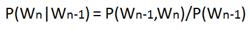

Probability of a sentence can be calculated by the probability of sequence of words occuring in it. We can use Markov assumption, that the probability of a word in a sentence depends on the probability of the word occuring just before it. Such a model is called first order Markov model or the bigram model.
Here, Wn refers to the word token corresponding to the nth word in a sequence.